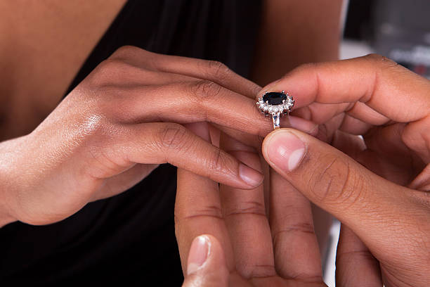
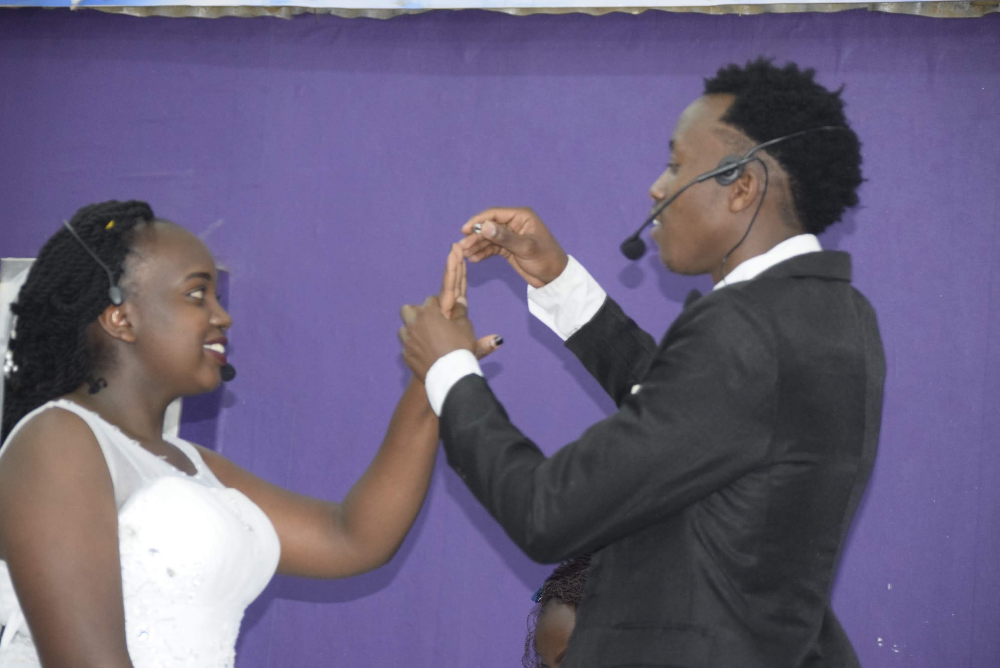

WEDDING
Choosing the right wedding photographer is all
about finding someone you connect with, whose style you love, and whose personality
meshes with your own. How your wedding day is remembered—it’s kind of a big deal.
We might be that person, and if you look through this site and think, “wow, I like this, they seems cool!”
then we would love to hear from you! We can check a big box off of your wedding
planning list: Capturing the moments?
we’ve got it covered.
Check out on our different packages below
Engagement shoot
The best way for the bridal couple and the wedding photographer to get to know each other and to experience my photographical style is an engagement shoot prior to your wedding. We will choose a location with a relaxed atmosphere for you. The images of an engagement shoot are obviously perfect for your wedding invitation cards. Pre-wedding Meeting
Your wedding is an individual and personal event and I believe a meeting in person to discuss all the details before your wedding day is immensely important. We will get to know each other and you can tell me about your expectations and your ideas about imagery and style. I will definitely try, to meet all of your wishes and to make you an offer, which perfectly suits your individual needs.
After wedding shoot
You are already married and still long for some special wedding images? On your wedding day is simply no time for a couple shoot? You wish to be photographed in a special location? Even after the actual wedding it is not too late! We are happy to meet you for a shoot after the hustle and bustle of your wedding in your dream location! Documentary
Starting from the pre-wedding preparations of bride and groom, to the wedding ceremony, reception until the party. In the course of the day, we will do group photographs and and a couple shoot.
Bridal Portraits
Bridal portraits are an inherent part of every wedding. For your shoot we will chose an estimated time frame of 30 to 60 minutes. This way we are able to create individual, unique images. We will do the shoot at a spot of your choice close to your wedding location.